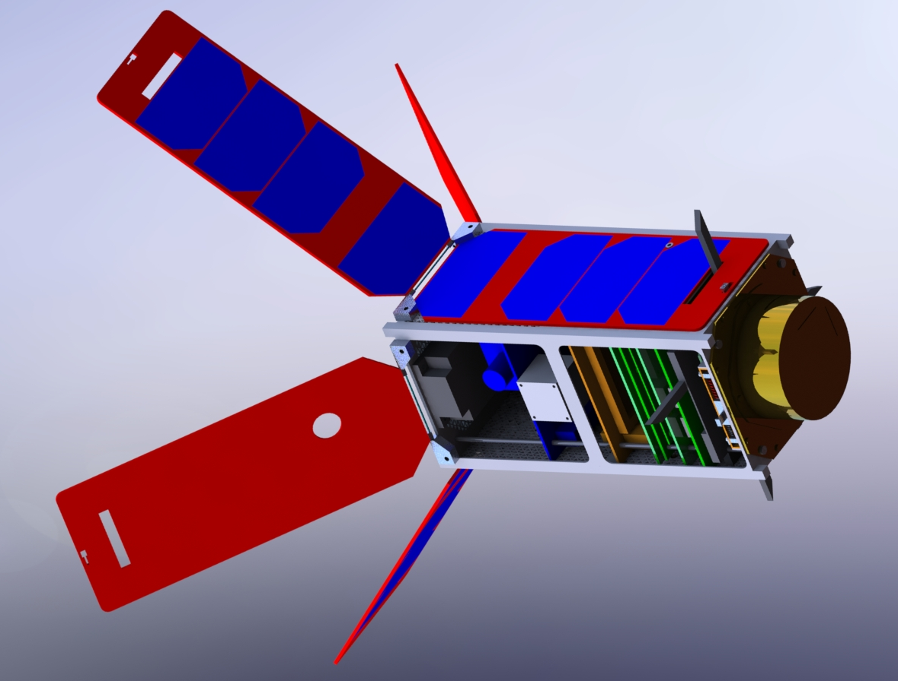

Daniel Antelo Roldán

My name is Daniel. I am a space propulsion engineer. Spaceflight has always captured my imagination, and I have developed a passion for it, which is why I chose to follow this path.
I am an ambitious and self-motivated person, driven by curiosity. My career goal is to become a launcher propulsion engineer.
Featured Projects
I will use this website to showcase and share projects alongside other things. Click on "FEATURED PROJECTS" to see the full list (This site is a constant work in progress!).
Sirius Bipropellant Rocket Engine

Project Sirius is a student led project that aims to design and build a cost-effective, three stage rocket to launch small satellites into low Earth orbit from a UK based spaceport.
The current stage of the project involves the design, manufacture and testing of a 1.5kN regeneratively cooled 3D printed liquid fuel engine. The project aims to serve as a testbed to develop a new generation of “green” propellant rocket propulsion.
Scientific CubeSat Concept Study
This project consisted in the conceptual design of a 2U CubeSat mission aimed at measuring the concentration of CO2 in the thermosphere. The development was carried out following a concurrent design approach.
The proposed spacecraft is also a technology demonstrator for the use of deployable solar arrays for passive attitude bias, SLS 3D printing for the primary structure and shape memory alloys in deployment mechanisms.
Miniaturised Infrared Radiometer

This project involved the design of a scientific instrument: a miniaturized infrared (IR) radiometer designed to measure net thermal radiative flux inside Venus' atmosphere.
This instrument has a minimal number of components: a thermopile sensor, a calibration source, and a MEMS light switch. The MEMS device can either reflect external atmospheric light into the sensor, or steer radiation from the calibration target into the sensor. Providing in-situ reference readings to calibrate the mirror while it descends through the atmosphere, correcting any measurement drifts.
Fixed Wing UAV

This project comprised the design, manufacture and testing of a 1.8 m wingspan UAV. We had to face the challenges involved when dealing with tight mass, volume, time and cost budgets.
We were able to design and build a machine that can fly beautifully while recording lots of telemetry & payload data to serve very different missions.